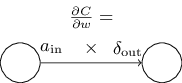

Derive backpropagation
1 Forward Propagation

\[\boldsymbol a^l = \sigma(\boldsymbol z^l)\]
\[\boldsymbol z^l =\boldsymbol w^l\boldsymbol a^{l-1} + \boldsymbol b^l\]
non-vectored form
\[a_j^l = \sigma(z_j^l)\]
\[z_j^l =\sum_k w_{jk}^la_k^{l-1} + b_j^l\]
2 Backward Propagation

\[ \delta^l_j \equiv \frac{\partial C}{\partial z^l_j}\] 1
delta衡量的是对神经元输出激励值的误差
\[\boldsymbol \delta^L = \frac{\partial C}{\partial \boldsymbol a^L} \odot \sigma'(\boldsymbol z^L) = \nabla_a C \odot \sigma'(\boldsymbol z^L) \tag{1} \]
\[\boldsymbol \delta^l = ((\boldsymbol w^{l+1})^T \boldsymbol \delta^{l+1}) \odot \sigma'(\boldsymbol z^l) \tag{2}\]
\[ \frac{\partial C}{\partial b^l} = \delta^l \tag{3}\]
\[\frac{\partial C}{\partial w^l_{jk}} = \delta^l_j a^{l-1}_k \tag{4}\]
1 | a(in)是输⼊给权重w的神经元的激活值，δ(out)是输出⾃权重w的神经元的误差，那么代价函数对参数w的偏导如下： |

3 Proof and Derivation
- 3.1 The first equation \[\begin{align} \delta^L_j &= \sum_k \frac{\partial C}{\partial a^L_k} \cdot \frac{\partial a^L_k}{\partial z^L_j} \\ &= \frac{\partial C}{\partial a^L_j} \cdot \frac{\partial a^L_j}{\partial z^L_j} \\ &= \frac{\partial C}{\partial a^L_j} \sigma'(z^L_j) \end{align}\]
1 | 当j不等于k时，a(k)对z(j)偏导为0 |
- 3.2 The second equation
\[\begin{align} \delta^l_j &= \frac{\partial C}{\partial z^l_j} \\ &= \frac{\partial C}{\partial a^l_j} \cdot \frac{\partial a^l_j}{\partial z^l_j} \\ &= \frac{\partial C}{\partial a^l_j} \sigma'(z^l_j) \\ &= \sum_k \frac{\partial C}{\partial z^{l+1}_k} \cdot \frac{\partial z^{l+1}_k}{\partial a^l_j} \cdot \sigma'(z^l_j) \\ &= \sum_k \delta^{l+1}_k w_{kj} \sigma'(z^l_j) \end{align}\]
- 3.3 The third equation
\[\begin{align} \frac{\partial C}{\partial b^l_j} &= \frac{\partial C}{\partial z^l_j} \cdot \frac{\partial z^l_j}{\partial b^l_j} = \frac{\partial C}{\partial z^l_j} \cdot 1 = \delta^l_j \end{align}\]
- 3.4 The fourth equation \[\begin{align} \frac{\partial C}{\partial w^l_{jk}} &= \frac{\partial C}{\partial z^l_j} \cdot \frac{\partial z^l_j}{\partial w^l_{jk}} \\ &= \delta^l_j \cdot \frac{\partial z^l_j}{\partial w^l_{jk}} \\ &= \delta^l_j \cdot \frac{\partial (\sum_k a^{l-1}_k w^l_{jk}+b^l_j)}{\partial w^l_{jk}} \\ &= \delta^l_j a^{l-1}_k \end{align}\]